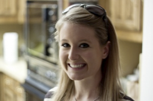

Members
Location: Dublin
Simon
Simon is married with no children, and is very close to his extended family - aunts/uncles, nieces/ nephews. His father died from alcoholism, which affected his liver and his mother is still alive. His grandparents both passed when he was in his teens. Simon used to go out all the time, but due to the recession, he sits in a lot more than he used to. He still likes going to art exhibitions and events. He has a close circle of friends He has a lot of acquaintances. Simon works from home as is self-employed as runs his own business presently. He commutes into a shared office at times, and also rents a conference room for business meetings on an ad hoc basis. Simon is healthy and very active, he cycles 100km per week, and sails occasionally at the weekend on a cruiser yacht. He is a photographer, architect, technically minded, notices small details, art focused. Simon is open minded to an extent, is more introverted than extroverted, doesn't like to openly display his personal opinions on things that are non-work related. Likes old things. Savvy on computer programmes, downloads games, movies, apps, on the fly.

Location: Dublin
Joanne
Joanne has two younger siblings, her father died of cirrhosis of the liver, and her mother has HCT. Joanne is single and lives at home with her parents; she has an active social life and enjoys travelling.She goes to college in the evenings and plays golf on the weekends. Joanne works in a small accountancy firm in Dublin city centre, she drives to work each morning, when she finishes 3 nights a week, and she goes to college where she has classes until 10 on Monday, Tuesday and Thursday. Joanne loves to cook and collects a lot of recipes; she takes holidays in France mainly for the food. Joanne has a healthy attitude towards life and has no qualms about regular check-ups at her local GP. Joanne is not technically minded or so she'll tell you but she does use a smart phone which she says she would be lost without. Joanne was diagnosed with HCT at the age of 27 whilst undergoing a routine operation.Location: Wexford
Michael
Michael is widowed 6 years. He has 3 children and 7 grandchildren. He has a brother John that was diagnosed with HCT 4 years ago. He plays golf and enjoys a few pints of stout in the pub on Sunday evenings, with his golfing buddies. He is lonelier than he used to be due to his wife passing, he does join group occasionally but finds he has little in common with them. He is retired, but used to manage people in a manufacturing plant; he was an engineer before moving into management at a young age. He relates well to people and gives instruction easily. He was well liked by his co-workers and staff. He is not that technically savvy, his granddaughter got him a smart phone for Christmas last but he has never downloaded an app – yet!
Location: Cork